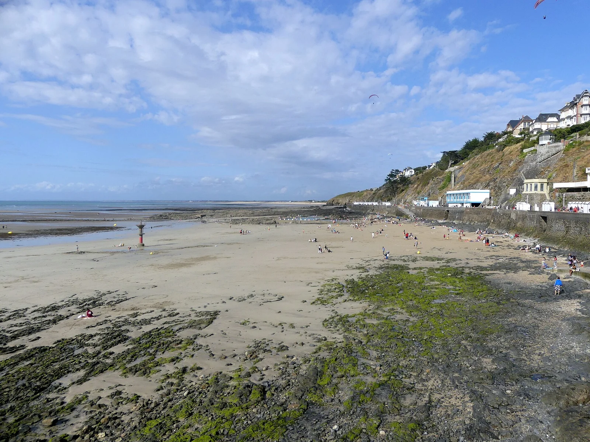

Granville — Plat Gousset
Manche, France · kayak, baignade, paddle

Cité corsaire face aux îles Chausey : kayak vers l'archipel et baignade, dans l'une des plus grandes marées d'Europe.
- Lieu
- Manche, France
- Niveau
- Débutant
- Activités
- kayak, baignade, paddle
- Type d'eau
- Mer / océan
- Coordonnées
- 48.84, -1.60 (position approximative du secteur)
Dangers à connaître
- Marnage parmi les plus forts d'Europe.
- Trafic vers Chausey et Jersey.
Le conseil d'Ocean Buddy
Traversée vers Chausey en kayak : uniquement encadrée.
Ouvrir dans Ocean Buddy Télécharger sur l'App Store
Source : Description historique Ocean Buddy · vérification externe en attente.